VHD ファイルの作成
公開日：
VHD（Virtual Hard Disk：仮想ハードディスク）の作成。Windows 8はVHDにインストールしてブートできるので、これからお世話になることが多くなると思う。
VHD ファイルを作成する
スタートメニューにある［コンピュータ］のコンテクストメニューで［管理］を選択。
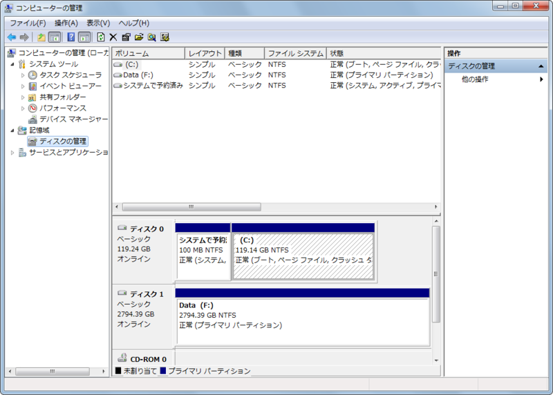
［ディスクの管理］を選択。
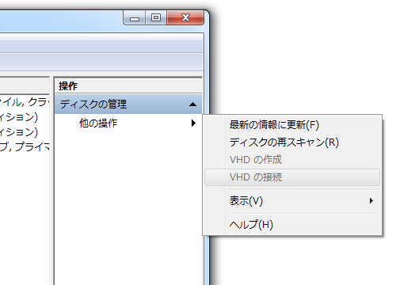
右ペインにある［ディスクの管理］－［他の操作］から［VHDの作成］を選択。
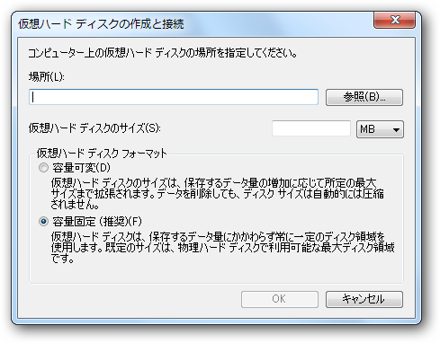
設定。普通は容量固定のほうがいいみたい。
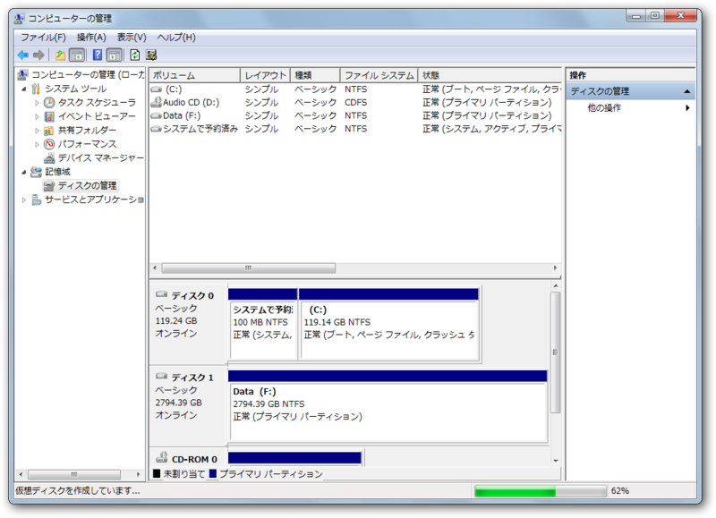
作成が始まる。進捗情報はステータスバーに現れる。案外時間がかかるっぽい。OS をインストールするなら、これ以降の作業は必要がないが、一般のドライブとして利用するには、接続と初期化が必要になる。
VHD ファイルの接続
VHD ファイルを接続すると、自動でドライバがインストールされ、ファイルシステムにマウントして利用することができる。
［ディスクの管理］－［他の操作］から［VHDの接続］を選択。
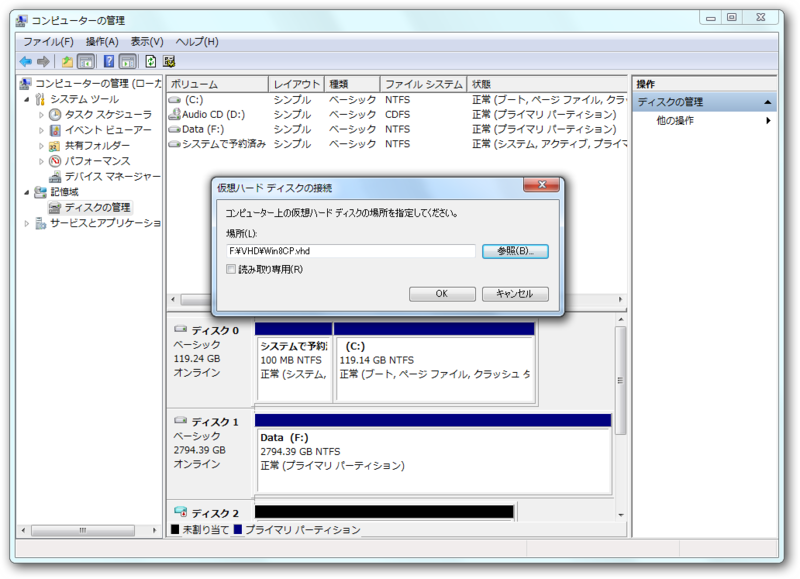
パーティションの作成
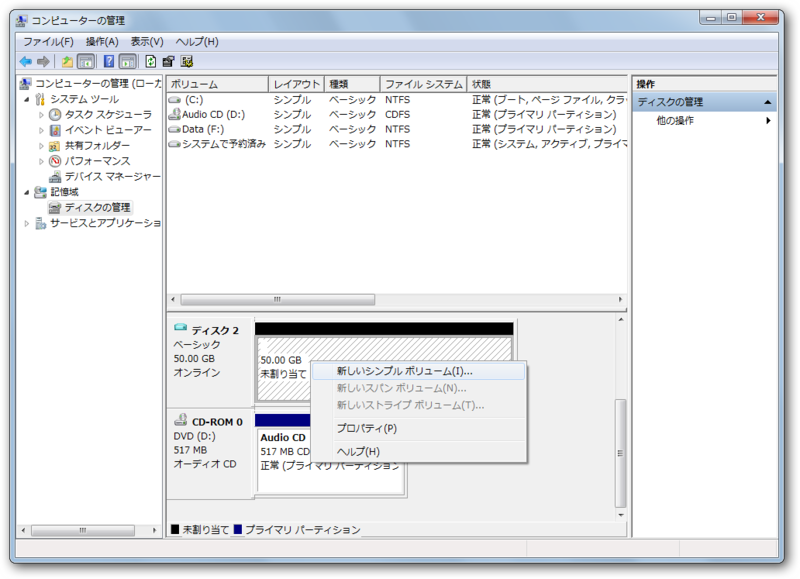
［新しいシンプルボリューム］を選択すると……
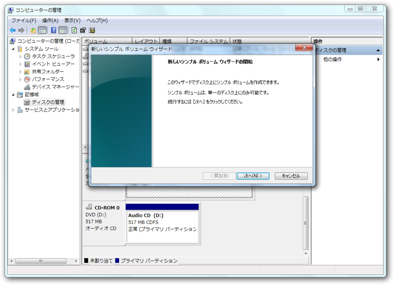
パーティションの作成ウィザードが現れる。
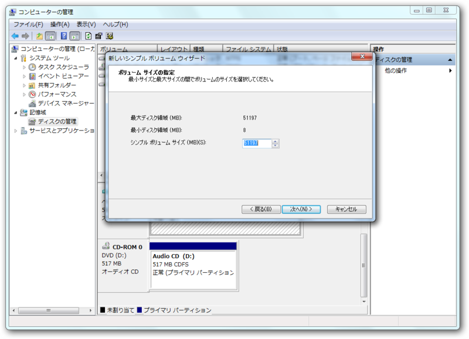
パーティションサイズの指定。
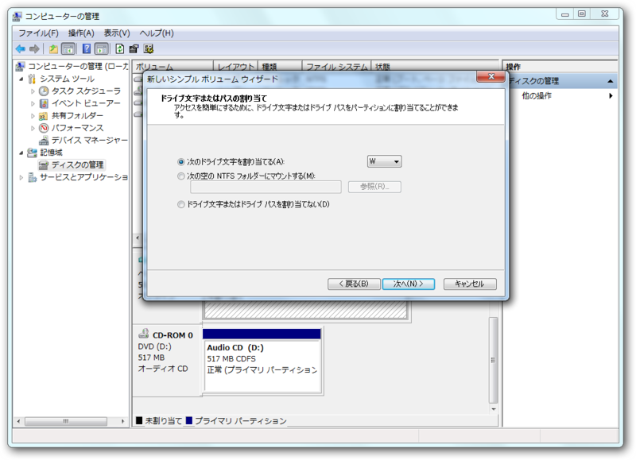
ドライブレターの割り当て。
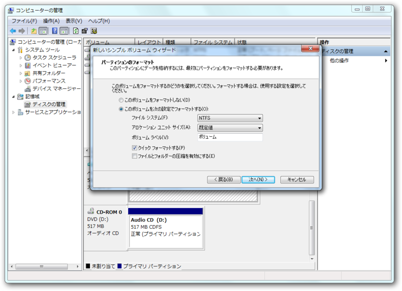
フォーマット方法を指定。多分、初期値のままでOK。
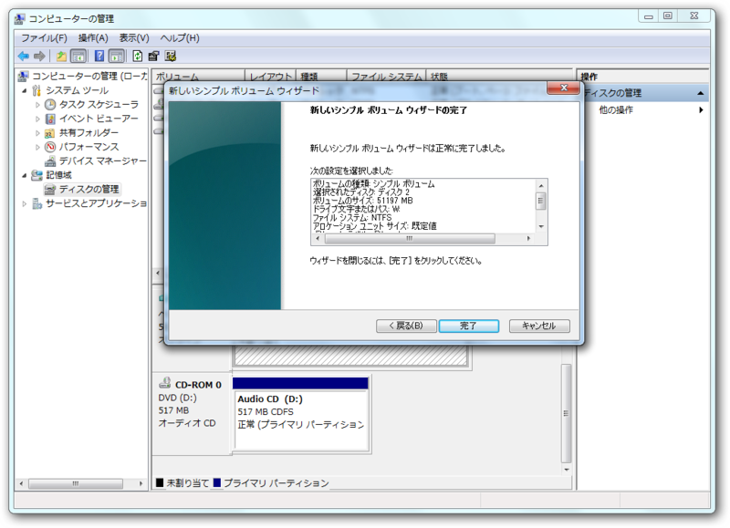
あとは待つのみ。